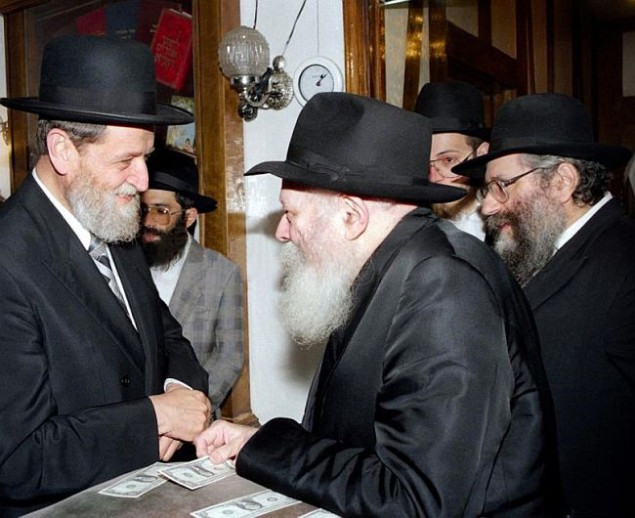

The Rebbe and the Family of Kohanim
The gaon, Rabbi Dovid Cohen zt ” l, was known as the Nazir. His genius and asceticism were a byword in Yerushalayim in the previous generation. His son, Rabbi Sheor Yashuv Cohen, was the rav of Haifa. Both of them had deep and unique ties with the Rebbe . * Beis Moshiach shares fascinating documents from the archives of Rabbi Avrohom Rosenbaum, secretary and confidant of R ’ Sheor Yashuv. * What did the Nazir ask before he died? How did R ’ Sheor Yashuv describe the yechidus that lasted three and a half hours? When did the Rebbe suggest that the name of “ Machon Harry Fishel L ’ Drishas HaTalmud U ’ Mishpat Torah ” be changed? Why was the idea rejected ?
By Yosef Hershkop

R’ Cohen was a genius in Torah and science. He was the devoted student of Rabbi Avrohom Yitzchok Kook, Chief Rabbi of Israel.
Rabbi Cohen was born in 5647/1887 in Maišiagala near Vilna. In his childhood, his blessed talents were already apparent. At the age of nine he was sent to his grandfather’s house in Radin where he learned in the company of people far older than him. About a year after his bar mitzva, he was accepted to the famous yeshiva in Volozhin, Lithuania. At age 16 he returned to Radin where he began learning Torah from the Chofetz Chaim.
While learning in yeshiva, his enormous devotion to Torah study was apparent. Among his belongings and from his chavrusas we have a list of his sidrei ha’limud and cheshbonei nefesh in charts and daily lists he wrote for himself. In his memoirs, R’ Cohen wrote the following description: “The long winter nights were dedicated to learning nonstop. Between my fingers was a lit candle as a means to ward off sleep. By day, my bare feet were on snowballs to prevent sleep.” This period of study lasted through his late twenties.
Rabbi Dovid Cohen was tremendously gifted and had an iron will. He knew of no compromises. He strove for absolute truth, to the highest, deepest, and most hidden understanding. To achieve this, he was willing to devote himself entirely. As a member of a family of rabbanim for generations, he grew up first and foremost on Torah, but that did not still his turbulent soul, and he continued learning and delving into all the philosophies extant in the world at that time. He studied foreign languages for this reason and read the great philosophers’ works in the original. While doing so, he continued studying Torah assiduously and was greatly particular about his mitzva observance.
Another period in his life included his studies at the Jewish Academy for Jewish Studies founded by Baron David Gunzberg in Petersburg where the learning focused on researching Talmud and Midrashim. Among his classmates there was the man later known as President Zalman Shazar.
Then Rabbi Cohen went to study at the Freiberg University in Germany where he primarily studied literature.
Before going to Germany, he became engaged to his cousin Sarah, daughter of Rabbi Chanoch Henich Etkin, rav of Luga. When the Rebbe Rayatz was imprisoned, the Rebbe MH”M had to go into hiding. He did so in the home of Rabbi Etkin and was there for a long time.
Years later, in a yechidus with Rabbi Sheor Yashuv, the Rebbe said, “Your grandfather had a good quality …” Rabbi Cohen thought the Rebbe would mention something about his learning or piety, but the Rebbe smiled and said, “Your grandfather was a poor man.” Because of his poverty, he had to work as a bookbinder which diverted the authorities’ attention from him and enabled him to provide the Rebbe with a hideout.
Over the years, when Rabbi Sheor Yashuv told about his ties with, and signs of affection from, the Rebbe, he attributed them to the gratitude the Rebbe felt for having been able to hide in his grandfather’s house. Rebbetzin Tzefiya Goren, R’ Dovid Cohen’s daughter, said that the Rebbe honored her and even stood up for her when she accompanied her husband on a visit, because she was a granddaughter of the rav from Luga.
WHY DIDN’T THE FATHER EAT MEAT?
The couple planned on marrying in a year or two, but then, the First World War began. Rabbi Dovid Cohen fled to Switzerland where he met the man who would become his primary rebbi, Rabbi Avrohom Yitzchok Kook. At the same time, the Russian Revolution was raging in Russia. As a result of these political events, the groom and bride were separated for twelve years until they made aliya and married.
During those years, R’ Dovid established his place in Rav Kook’s beis midrash where he learned day and night. The afflictions and fasting that he took upon himself were his daily lot, and he especially took upon himself vows of silence.
R’ Dovid yearned to ascend higher and higher so he committed himself to nezirus and prishus (asceticism). He no longer drank wine and did not cut his hair, which eventually became his most commonly known feature. He also refrained from eating meat and adopted vegetarianism as his way of life.
When his son, Rav Sheor Yashuv, had yechidus with the Rebbe in 5725, the Rebbe spoke about his not eating meat. The Rebbe said to him, “You are fulfilling ‘the deeds of your fathers,’ but your father is a big mekubal. How does he allow himself to refrain from refining the sparks in meat?”
Rav Sheor Yashuv said at first he was confused but then he recovered and asked the Rebbe whether he had the S’dei Chemed. There, under the entry of eating, he writes about one of the students of the Ari “that it is a number of years now that he abstained from eating meat and G-d forbid to mock him and fortunate is his lot.” The Rebbe, as quoted in the book Yechidus, responded that this pertains to unique individuals.
Rav Sheor Yashuv’s coming close to Chabad and the Rebbe began in his youth when he attended a daily shiur in Gemara given by Rabbi Zevin z”l, but it seems the Chabad connection is deeper and older than that.
This is what R’ Cohen writes about his father: “In particular, he cherished the Kuntres Hahispaalus of the Mitteler Rebbe, and he would engage in the holy service of t’filla, according to his path of excitement of the intellect with tears of joy rolling from his eyes. Years later, when I met with my father, when he returned home bein ha’z’manim, he said he brought me a nice gift and he took the Kuntres Hahispaalus out of his tallis and t’fillin bag and gave it to me. I did not understand the value of the gift. Many years later, when I was in seminary in Germany, my heart was drawn after the wisdom of kabbala. I wrote my father a letter with questions about the s’firos, the kochos and bechinos and in response he sent me a Tanya and the Kuntres Hahispaalus by mail.”
The Chabad influence could be seen in R’ Cohen, as Zalman Shazar put it in a eulogy for his friend: “A great and lofty subject unto itself is the weave that connected the teachings of Rav Kook and the subordinate rational approach of R’ Dovid Cohen, to the teachings of the Alter Rebbe, Rabbi Shneur Zalman of Liadi, author of the Tanya, and mainly the Kuntres Hahispaalus of Rabbi Dovber, the Mitteler Rebbe, and all the teachings of Chabad. Rav Kook knew about this, and his student who was expert in every facet of his teachings, emphasizes this in amazing fashion and explains this with great admiration in his work Kol HaNevuah.”
In his Kol HaNevuah, the Nazir did not quote anything from the general teachings of Chassidus; only from the teachings of Chabad, especially from the Mitteler Rebbe, due to the strong intellectual attachment that he felt towards the Torah of Chabad.
DEEP AND CLOSE CONNECTION
The deep connection with the teachings of Chabad did not remain solely in the realm of ideas, but was expressed in an exchange of letters with the Rebbe, from which his admiration of the Rebbe is apparent, as well as the Rebbe’s special regard for R’ Cohen.
On 6 Tishrei 5721, the Rebbe addressed him with the rare title “Baal Middos and Baal Hashem” (man of character and man of renown).
A few months later, on the first day of Chanuka, the Rebbe sent him another letter in response to a letter of his and to thank him for sending an advance copy of one of his works, and the Rebbe went on to append some comments.
In R’ Cohen’s return letter, included with his Chochmas HaKodesh which he sent to the Rebbe, one can see the respect R’ Cohen has for the Rebbe, and although he mentions that the Rebbe’s comments point to a difference in viewpoint on a number of topics, he signed off the letter in extremely humble fashion.
The connection between him and the Rebbe continued by way of his son, R Sheor Yashuv Cohen, with the Rebbe sending regards to his father and inquiring about his welfare, through the son, as well as requests from the father to be mentioned before the Rebbe for a blessing. This was a request that he repeated often to those around him.
On 28 Menachem Av 5732 (1972), R’ Dovid Cohen returned his soul to his Maker, at the age of 85. As per his request, at the time that his soul expired, those present sang a song of yearning for the rebuilding of the Beis HaMikdash, “Yibaneh HaMikdash.” He was laid to rest in the “portion of the prophets” section on the Mount of Olives.
At the conclusion of the Shiva, R’ Avrohom Rosenbaum, who assisted the Nazir in organizing and publishing his writings, wrote a letter to the Rebbe. This was in response to a letter of the Rebbe asking for an update about the articles and writings of R’ Cohen.
The letter is dated 7 Elul 5732, and includes an account of his last days and moments:
“As the secretary and confidant of the Rav and Gaon R’ Sheor Yashuv Cohen, who has gotten up from Shiva after the passing of his great father, the holy Gaon, R’ Dovid Cohen zt”l, I am hereby informing about the developments since he sent the telegram pa”n until today.
“The telegram was sent as per the request of the deceased Rav zt”l, who repeated the request over and over again, ‘to mention him before the Rebbe,’ and then added at the end ‘the Lubavitcher Rebbe.’ This was after he had lain for three weeks in the Shaarei Tzedek hospital, where he was brought after he had fallen in his home, apparently due to dizziness, and he required medical care. His condition improved and they were already discussing releasing him from the hospital, when suddenly the situation took a turn for the worse…
“On Monday night, Parshas Shoftim, 28 Menachem Av 5732, at three in the morning, literally at the break of dawn at the time that he would arise every day, he returned his soul to his Maker. Around him stood his son, single and married students of the yeshiva, and R’ S. Goren said the Vidui. All of this took place last week, and he was in the hospital a total of 32 days. He was 85 at the time of his passing.
“About a half hour after he passed, he was taken to Yeshivas Merkaz HaRav in the old house of ‘the Rav,’ where he was a teacher for 50 years, ever since he arrived in Yerushalayim in the year 5682. His funeral took place that day, on Tuesday at 3 p.m., and he was buried on the Mount of Olives next to the grave of R’ Kook zt”l.
“After the Shiva, his students held a special gathering in connection with his writings which he left behind, in Halacha, Agada, and Jewish thought. A committee was established to publish his writings, and the plan is to set up an institute in the home of the deceased.
“[His son] R’ Cohen, has been leading all of the services in the Beis Midrash that is in his home, and he plans on giving classes in Halacha (the laws of mourning) and Jewish thought (Emunos V’deios, Kuzari, based on the many writing of the deceased Rav on these works), in the beis midrash of the deceased, before the members of the institute and the midrasha.
“In anticipation of the upcoming new year, which is coming upon us and all of the Jewish people for good and blessing, I herewith put forth in his name a request to be remembered for blessing and success for a good year, a year of redemption and salvation in all things good, and especially the spreading of Torah, and knowledge, and service of Hashem:
Eliyahu Yosef Sheor Yashuv ben Sarah,
His wife, Naomi Nechama bas Rivka,
Their daughter, Eliraz bas Naomi Nechama”
This request of the Nazir to be mentioned for blessing and salvation before the Rebbe is in line with the instructions that he left for his children, as recounted by R’ Sheor Yashuv Cohen to R’ Yehuda Leib Schildkraut, the shliach of the Rebbe in Haifa:
“Before his passing, my father, the Rav HaNazir zt”l, instructed me and also my sister, ‘Until now when you needed to ask something, you would ask me. After a hundred and twenty, when a doubt will arise as to how to proceed, you should ask the Lubavitcher Rebbe.’”
R’ Sheor Yashuv also told this to the Rebbe in yechidus, during the period following his father’s passing.
R’ SHEOR YASHUV CONTINUES THE TRADITION
In this wondrous home, in the shadow of his great father, grew up one who later became known as the Chief Rabbi of Haifa and member of the Advisory Committee of the Chief Rabbinate, R’ Sheor Yashuv Cohen.
His admiration for the Rebbe and Chabad came to the fore at every station in his life, in the positions of influence that he held. We see this also in the letters of blessing that were sent to him from all the Chabad mosdos in Yerushalayim upon his appointment to the position of deputy mayor after serving as an ordinary council member. One such congratulatory letter, written by R’ Tuvia Blau, on the official stationary of Tzeirei Agudas Chabad of Yerushalayim, refers to his being, “a true friend to Chabad Chassidus, who merited the expressed admiration of K”K Admor shlita on a number of occasions.”
Among the many positions he filled faithfully until his final days, what stood out was the Machon Harry Fischel L’Drishas HaTalmud U’Mishpat Torah (the Harry Fischel Institute for Research in Jewish Law and Torah Legislation). This institute was founded as the Institute for Research in Jewish Law in 5692/1932, and was funded by the American philanthropist Yisrael Aharon Fischel who was known as Harry Fischel. Later, Rabbi Yitzchok Isaac Herzog zt”l founded the Machon Mishpat HaTorah (Institute for Torah Legislation), and upon the joining of the two institutions, the two names were co-joined, and that is how it appears on the many volumes of Torah literature published and annotated by the institute, and on the certificates of the hundreds of rabbis and dayanim who received their training at the institute.
It was in light of this that the Rebbe wrote to R’ Sheor Yashuv, that at that time the Justice Ministry had convened a committee of jurists who were assigned the task of “suggesting a series of laws to replace the existing civil laws, which are currently in force in the Holy Land as holdovers of previous regimes, in the fields of contract law, business law, hired labor laws, and the like.” The Rebbe goes on to suggest that the members of the Institute for Torah Legislation, who are engaged in the field, should derive the relevant laws from the “Choshen Mishpat” section of the Code of Jewish Law, and they should present this as an alternative to the government to replace the British laws.
THE OVERT AND COVERT SUPPORT OF THE REBBE
At some point, the Harry Fischel Institute under the leadership of R’ Sheor Yashuv began to come under attack from some opponents among the Roshei Yeshivos of that period, and the Rebbe was apprised of the situation. The Rebbe, who had encouraged and supported the institute and its activities from its inception, expressed his concern in a lengthy yechidus, notes of which were sent in writing by R’ Sheor Yashuv to his personal secretary:
“4 Adar 5752… I was by the Lubavitcher Rebbe for a lengthy and warm discussion, just this past Sunday. He supports us with all his heart and broad mind.
“He spoke a lot about the need to save the Jewish world through training real and suited Rabbis, and he expressed his hope that even the Roshei Yeshivos who opposed us, will be happy to send us their students. Their opposition is because they oppose teaching Rabbinic studies in their yeshivos, and we are, in fact, only a kollel that accepts yeshiva graduates. If so, why should they oppose us?
“After I explained to him all of the details of the issue, he suggested that we change the name of the institute, so that instead of research institute, we change it to ‘advanced yeshiva,’ ‘mesivta,’ ‘beis midrash,’ and the like.
“We ended up parting ways due to the late hour, and he promised to think about the name.
“Understandably, he promised that if our institute would agree to this name change (without any change in goals etc., committees, or changes in the courses of study), he would inform Anash in Eretz Yisroel of his position, and they should work on our behalf and on behalf of peace.
“I left the encounter filled with joy.”
Later, he continues to report on the developments: “Last night there was a development. R’ Chadakov, the Rebbe’s trusted assistant, called my home and informed me that since the Rebbe received reports that the opponents have decided to continue their attacks against us (as opposed to the earlier impression he had that they were just looking for a dignified way out), as such… our conversation of Sunday night about the name change falls away and has no place.
“I asked: If so, what is his suggestion? To this, R’ Chadakov had no answer. I requested that he inquire of the Rebbe as to his advice and his view, in light of this new state of affairs. And I am hoping for an answer to that question this evening, with Hashem’s help, as I plan to call the Rebbe this evening, with Hashem’s help.”
THREE AND A HALF HOUR ENCOUNTER
As mentioned earlier, R’ Sheor Yashuv attended in his youth a daily class given by R’ Zevin, who opened a window to, and gave him a taste of, the sweetness of Chabad teachings and a connection to the Rebbe.
His work as the president of the Harry Fischel Institute, along with his being a leading religious activist in the Holy Land, forced him to spend a significant portion of his time traveling overseas, and especially to the United States. His acquaintance with R’ Zevin, and the merit of his father and grandfather, were what brought him to have his first yechidus encounter with the Rebbe. That meeting left an indelible impression, and from that point on, he made every effort to go see the Rebbe every time that he came to New York. During some of those visits, he was entrusted with a number of missions, such as the message for Chanuka that was published by Tzach on 23 Kislev 5751, under the banner headline, “The words of the Rebbe shlita, who requested of R’ Sheor Yashuv Cohen that he transmit them to Chabad Chassidim in the Holy Land.”
Much has been recorded about this special connection, both from his own public statements and what was published by his biographers. The following are his firsthand impressions as seen from some correspondence between the rabbi and his secretary, R’ Avrohom Rosenbaum a”h, regarding his very first encounter with the Rebbe.
In a letter dated 18 Cheshvan 5723/1962, sent by R’ Rosenbaum to R’ Sheor Yashuv, who was in London at the time, he included a letter from the Rebbe addressed to R’ Sheor Yashuv (which had been delivered to R’ Rosenbaum by Tzach). In his response from London, regarding the forwarding of the letter from the Rebbe, he writes, “I was happy to receive the letter of the Lubavitcher Rebbe, who I might visit, with Hashem’s help. I hope that the s’farim will reach the United States before I leave there.”
In the response letter from R’ Rosenbaum, dated a few days later, he writes that “it should be noted that the first volume that will arrive in the United States is for the Lubavitcher Rebbe.”
A few weeks later, R’ Sheor Yashuv writes to his secretary, “It is literally hard to describe… A brief description of the past week: meeting with the Lubavitcher Rebbe, which extended for three and a half hours, from 10:00 to 1:30 after midnight. Discussed were all of the questions, practical, spiritual and moral, in our world at large and our smaller world. Incidentally, the Rebbe received me during hours that he does not receive people during the days of Chanuka, and I felt an amazing friendship from his end, literally like a man would talk to his friend. Details when we meet, with Hashem’s help.”
About his later visit to the Rebbe, along with Shazar, R’ Sheor Yashuv describes in greater detail in the interviews that he granted regarding his connections with the Rebbe. It was during the famous visit of Purim 5731/1971, when R’ Sheor Yashuv was attached to the entourage of Shazar. When they arrived at 770, Shazar asked the Rebbe, “Ihr kent der yungerman? (do you know this young man?),” as he pointed towards R’ Sheor Yashuv. The Rebbe looked at him and answered, “What’s the question? We are old good friends?”
Even in later years, as he moved on to other elevated positions of responsibility, he would often consult with the Rebbe.
Additionally, there were many encounters at dollars distribution, when the Rebbe displayed special closeness, receiving him very warmly and at times would hold relatively lengthy discussions on a range of topics
R’ Zalman Liberow, who oversaw the editorial board of Haaros HaT’mimim at the time, tells of how in one of the pamphlets, someone brought up a certain topic. That week, R’ Sheor Yashuv visited the Rebbe. When the pamphlet was sent in to the Rebbe, the Rebbe jotted alongside that submission, “at length in the talk with R’ Sheor Yashuv Cohen.”
A little over a year ago, on 3 Elul 5776, R’ Sheor Yashuv passed away at age 89. His funeral was attended by a respected contingent of the Rebbe’s shluchim and Anash, who were often helped by him over the years. He was buried near his father on the Mount of Olives.
WITHSTANDING A GREAT TEST
R’ Dror Moshe Shaul, shliach of the Rebbe in Dharamsala India, told us the following story which illustrates the degree of regard that R’ Sheor Yashuv Cohen had for the positions of the Rebbe.
“A bit more than ten years ago, during the month of Kislev, a delegation of Jews from the Holy Land arrived for the purpose of meeting the Dalai Lama. In his role as the director of relations with religious leaders, R’ Sheor Yashuv was tapped to lead the delegation.
“I was hospitalized at the time in a different city, and I could not be there to greet the delegation, so my family went to welcome them in my place. When my wife heard about what they were planning, she called me and asked that I speak with the Rav about it.
“In a phone conversation that I had with the Rav, I explained to him the tremendous danger in meeting with the Dalai Lama, since many Jews fall into his cult of idol worship and become cut off from their Judaism. I raised the concern that many of those Jews will not understand the purpose of the Rav meeting that gentile figure, and are liable to take the very fact of the meeting as a seal of approval for their actions, not to mention the photos of the Rav alongside the Dalai Lama.
“The situation appeared far from simple, considering the fact that the Rav and the delegation had traveled a great distance to India, especially for this meeting.
“Suddenly, the Rav zt”l said to me on the phone that actually the Rebbe had once told him in yechidus, ‘that such a thing can cause a lot of confusion, and this is a difficult test of emuna which I don’t know if it is possible to withstand.’
“In the end, the Rav did not go to the meeting in question, despite the fact that he was the lead representative in the delegation. Instead, he made the difficult choice of spending Shabbos with my family in Dharamsala, under the difficult conditions of a harsh winter. He told my wife to tell me in his name, ‘Thanks to your husband for reminding me of the Rebbe’s stand on the matter, and because of that I did not go meet with that gentile.’”
Beis Moshiach (staff). "The Rebbe and the Family of Kohanim." Beis Moshiach, no. 1095 (November 28, 2017).